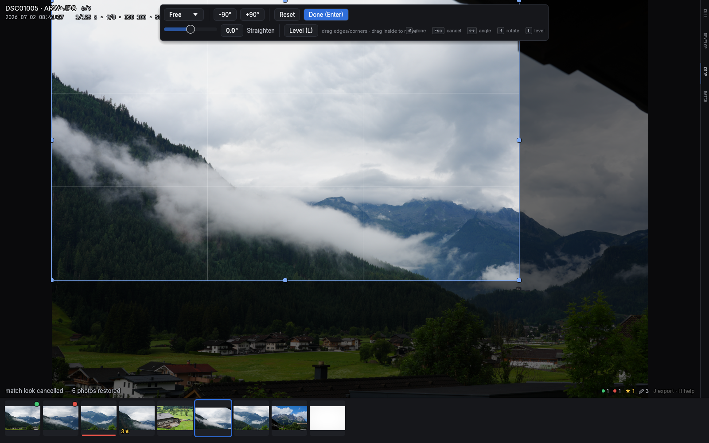
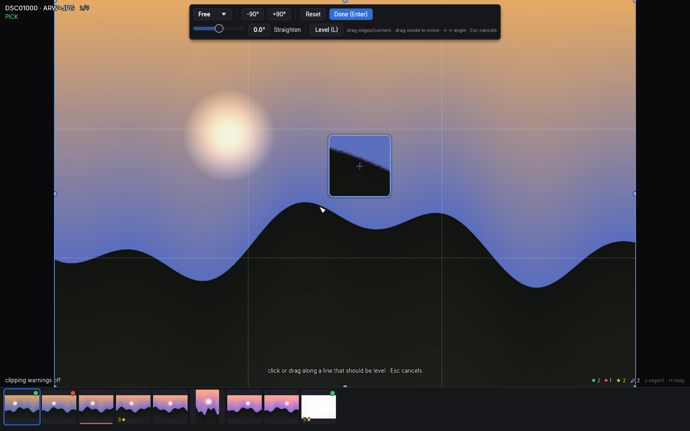

Crop, rotate and straighten
C enters crop mode: the full photo is shown with your crop window over
it and a rule-of-thirds grid, with the crop controls docked in a side
pane — nothing covers the photo while you work.

The crop window
- Drag any of the 8 corner/edge handles to resize; drag inside the window to move it.
- The window may extend past the photo's edges — the outside renders (and exports) as clean white padding. This is what lets a series of differently-framed photos share one frame: when a tighter shot needs the subject placed beyond its own edge, slide the window out and the export pads the difference. You can never lose the photo entirely — a slice always stays inside the window.
- The aspect picker locks a ratio: Free, original, 1:1, 3:2, 4:3,
16:9 — matched to the photo's orientation, with the
⇄button to cut a portrait crop from a landscape photo or vice versa. Switching aspect re-fits your existing crop around its center instead of resetting it. - Enter or
Capplies; Esc cancels and restores what you had when you entered. (Adjustments write live while you work, so leaving the app mid-crop loses nothing.)
Rotation
R/Shift+Rrotate 90° clockwise / counter-clockwise — these also work outside crop mode, so a sideways photo is a one-key fix while culling. The crop pane has matching-90°/+90°buttons.- The Straighten slider covers fine angles up to ±45°. In crop mode
the arrow keys nudge it by 0.1°,
Shift+arrowsby 1°. - Straightening auto-fits the crop so blank corners can never appear, and rotated photos cost nothing to display — thumbnails show crop and rotation live.
The Level tool: L
For horizons and doorframes, skip the slider: press L in crop mode,
then click (or press-drag-release) two points that should form a level
line. The photo rotates by exactly the required angle. Lines closer to
vertical level to vertical, so a wall works as well as a horizon.
While you aim, a 6× loupe floats beside the pointer with a crosshair on the exact pixel you're on — precise placement without your own cursor hiding the spot. It flips sides at the panel edges and always reflects your current develop settings.

Esc while the Level tool is armed backs out of the tool only; a second
Esc cancels crop mode itself.
Where it lives
Crop and straighten persist in the standard crs: schema
(crs:CropLeft/Top/Right/Bottom, crs:HasCrop, crs:CropAngle);
quarter turns use a culler-specific field since the crs: schema has
no field for 90° rotation. Cropped photos count as "edited" for the Edited
filter, and exports render exactly what you framed
(export).
Cropping a whole series to one matching frame — seeded from a reference, with a ghost guide for lining up the subject — lives inside Match Look: see Matching a series.